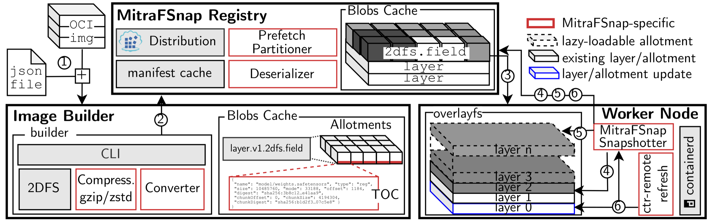
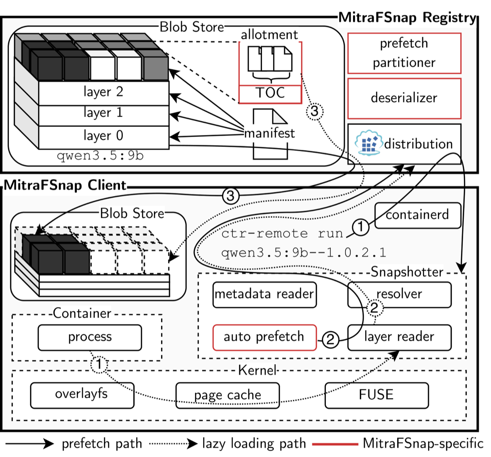
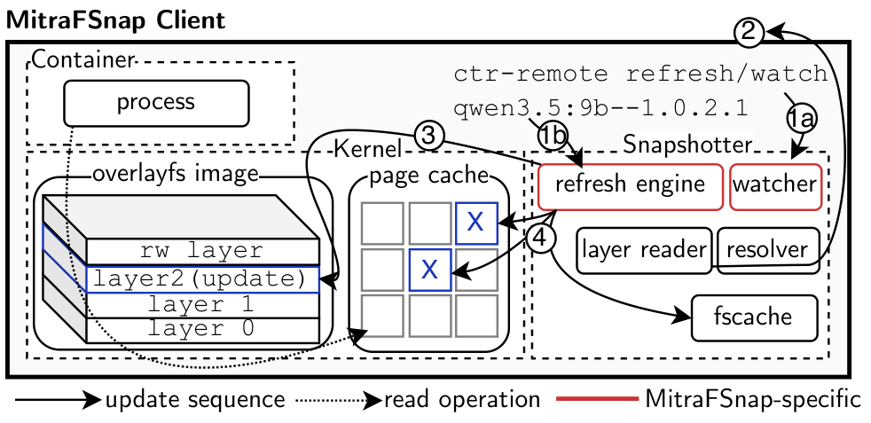

Builder
The builder packages each model or asset as an allotment that is built and cached independently. It generates the chunk index of every allotment during the build, so an update rebuilds only the allotments it changes.
Build Less, Pull Less, Restart Never: Fast Container Image Distribution and In-Place Updates
ML services ship their models, configurations and assets inside container images, together with a runtime that rarely changes. When one of these artifacts changes, the image pipeline builds a new image and replaces the container that uses it. A small configuration update therefore pulls the image again, discards the mounted filesystem and makes the new container read its working set from a cold mount.
MitraFSnap keeps the container running instead. It consists of an OCI compatible builder, a registry and a containerd snapshotter. After an update, the snapshotter replaces only the changed data behind the mount of the running container, and the rest of its cache stays valid.
Docker, eStargz, 2DFS and MitraFSnap roll out a new detector to the same camera (real time). Docker, eStargz and 2DFS replace their containers, so their cameras stop for several seconds. MitraFSnap refreshes the mount of the running container, and its camera continues without a gap.
A new container starts from a new snapshot. It has to pull the image, mount it and read every file it needs again, even if the update changed a single configuration file. Lazy loading formats such as eStargz start the container earlier, but the new snapshot still begins with an empty cache. In our measurements, 100 configuration updates of a Gemma 4 31B image transfer 4.7 to 5.7 TB with container replacement and 87.2 KB with MitraFSnap.
The image pipeline already knows what an update changed. Components that are built independently show which parts of the image differ between two versions, and the chunk index of a lazy loading format shows which cached bytes are still the same. MitraFSnap keeps both pieces of information from the build until the container runs.

ctr-remote refresh. Red boxes mark the parts
that MitraFSnap adds.The builder packages each model or asset as an allotment that is built and cached independently. It generates the chunk index of every allotment during the build, so an update rebuilds only the allotments it changes.
A client selects the partition of the image it needs. The registry turns this selection into a prefetch policy and still serves the complete image, so components outside the selection remain readable on demand.
The snapshotter adds refresh. It compares the chunk indexes of the old and new layers, replaces the readers of the changed layers and invalidates only the changed cached ranges. The application decides when to reopen the files.


Images built by MitraFSnap are standard OCI images, and the snapshotter runs as a containerd plugin. The builder, the registry and the snapshotter are forks of the 2DFS builder, the 2DFS registry and the containerd stargz snapshotter.
We evaluated MitraFSnap with three language models of up to 59 GB and a video analytics bundle of four models. Build times stay close to those of 2DFS, and pull times are comparable to those of eStargz. We measure an update until the application has read the updated files again.
| Update latency in the cloud, compared with container replacement | 8.3 to 85.9× lower |
| Update latency at the edge, compared with container replacement | 7.0 to 265.6× lower |
| Transfer for 100 configuration updates of Gemma 4 31B | 87.2 KB instead of 4.7 to 5.7 TB |
| Rebuild after a 25% update of Qwen3.5 9B, compared with Docker | 6.5× faster |
The demo runs one vision application with Docker, eStargz, 2DFS and MitraFSnap at the same time, on one machine and over the same emulated 200 Mbit/s link. Each method builds, deploys and updates the application in four acts. The videos below start with a short description of the acts and play at 2× speed, and the dashboard measures all times in real time.
The table shows one run of the traffic camera on a laptop. All four methods share the machine during the run, so the numbers show how the methods behave relative to each other and are not a benchmark.
| Docker | eStargz | 2DFS | MitraFSnap | |
|---|---|---|---|---|
| Total downtime, Acts 2 to 4 | 79.1 s | 37.1 s | 12.9 s | 0 s |
| Total time, all acts | 217.1 s | 148.1 s | 72.9 s | 58.4 s |
| Total build and push | 86.7 s | 108.8 s | 45.3 s | 39.5 s |
| Act 1, until the first frame | 71.4 s | 37.8 s | 24.8 s | 18.5 s |
| Downloaded | 1475 MB | 680 MB | 227 MB | 173 MB |